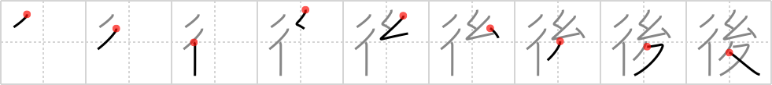

後
← →
behind

Reading:
On-Yomi: ゴ、コウ — Kun-Yomi: のち、うし.ろ、うしろ、あと、おく.れる
Heisig story:
Line . . . cocoon . . . walking legs.
Koohii stories:
1) [raulir] 16-12-2006(228): Column of walking legs (caterpillar) getting into a cocoon, about to leave its past self behind.
2) [decamer0n] 30-5-2007(75): after a grub goes through the cocoon stage, it leaves its walking legs behind for a life of flight.
3) [pmbeddall] 14-1-2008(67): Think of a column of ants moving to a new nest. The soldiers are in front. The workers are behind carrying the cocoons on their long walking legs.
4) [angerman] 18-11-2009(23): Better get going, there's a cocoon on walking legs behind us!
5) [dingomick] 20-12-2007(23): Lookout The Flash! There's an evil cocoon walking behind you!